レイヤーマスクとは
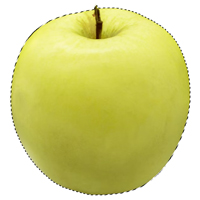
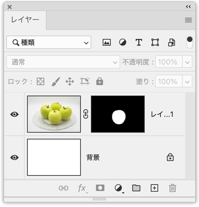
- 「レイヤーマスク」は、選択範囲を記憶した一部でもありチャンネル内の「アルファチャンネル」でもあります
- レイヤーマスクを使うと、レイヤーを部分的に隠したり、元に戻したりできます
選択範囲を作成
オブジェクト選択ツールで選択範囲を決める
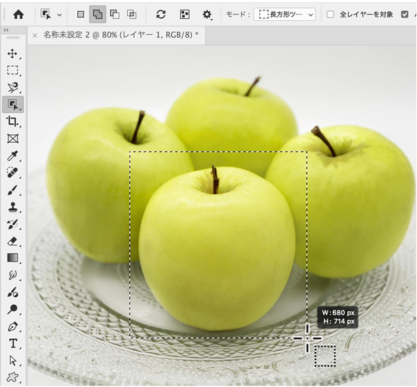
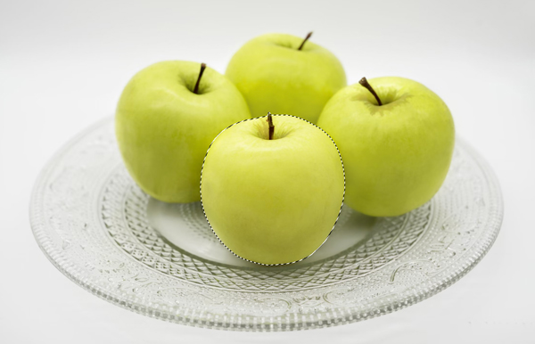
レイヤーマスクを追加
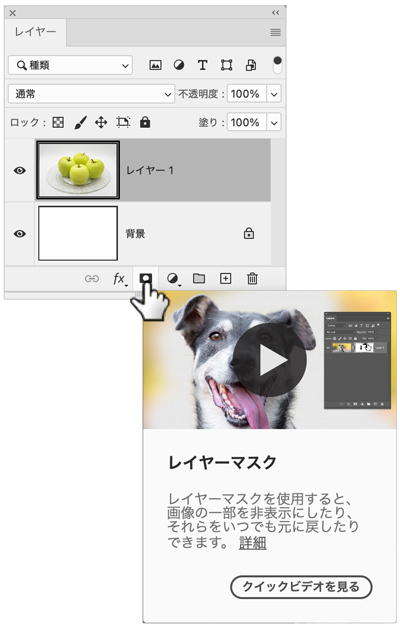
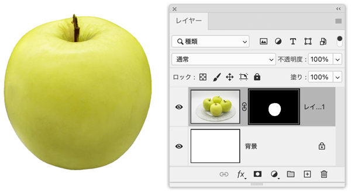
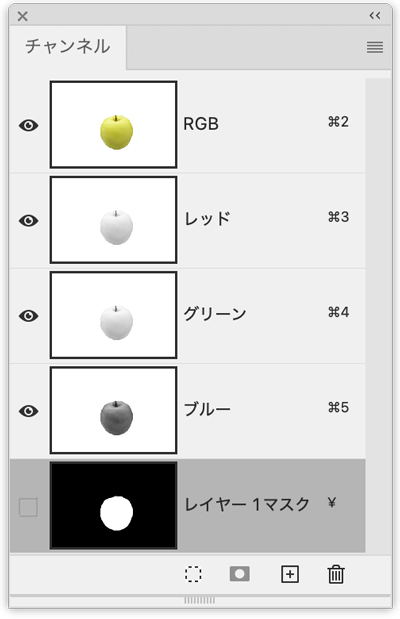
- 「レイヤーマスク」内の「黒」の部分で画像を隠す
- 「レイヤーマスク」内の「白」の部分で画像を表示
選択とマスク
- 「選択とマスク」を利用すると自動的に「レイヤーマスク」が作成されます
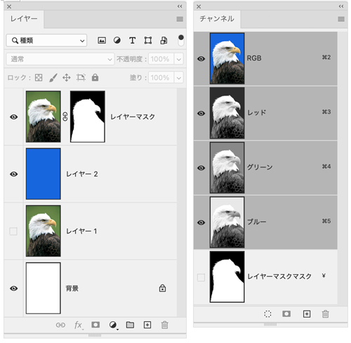
被写体を選択
- 「オブジェクト選択ツール」をクリック
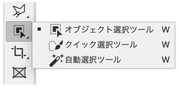
- 「被写体を選択」を使って補正対象にすばやく選択範囲を作成
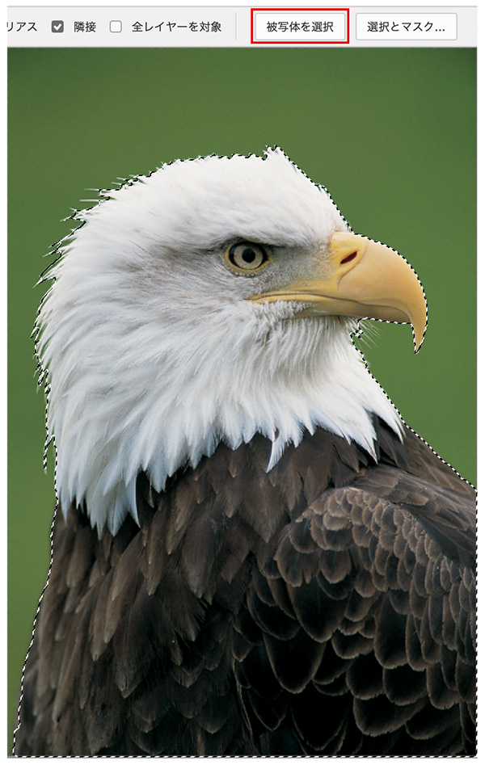
- 「選択とマスク」をクリック
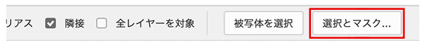
- 「不要なカラーの除去」をチェックし、オプションの数値を変化させる場合
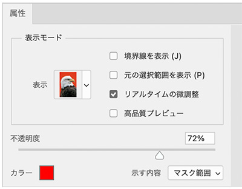
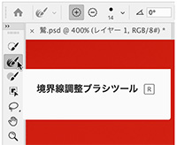
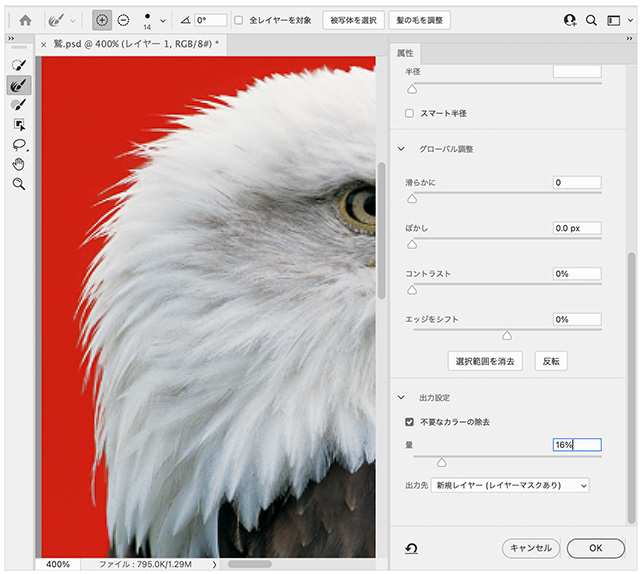
- 「レイヤー1」の上に新規レイヤーを作成し、青く塗りつぶす
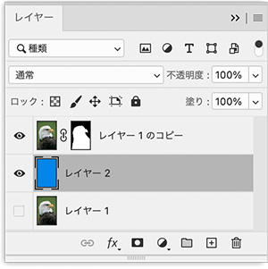